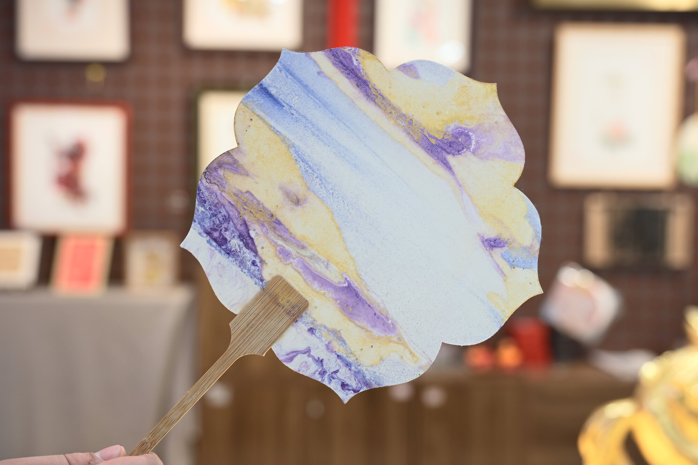
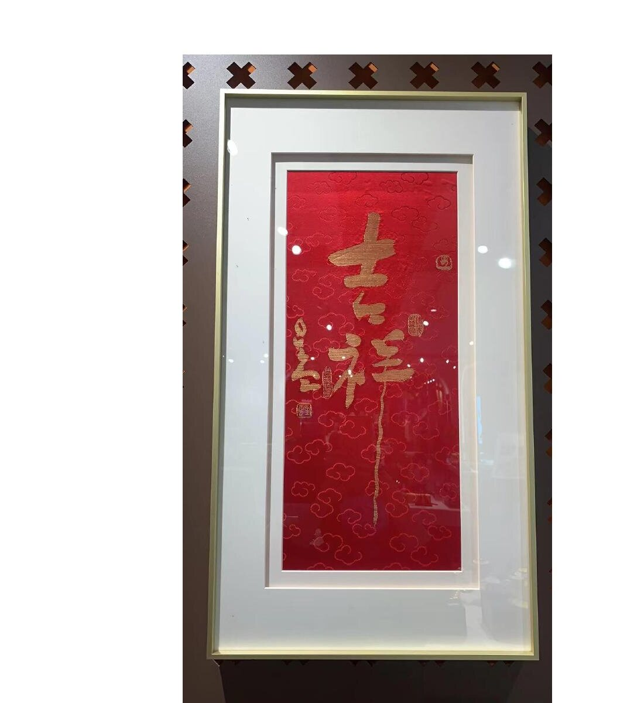
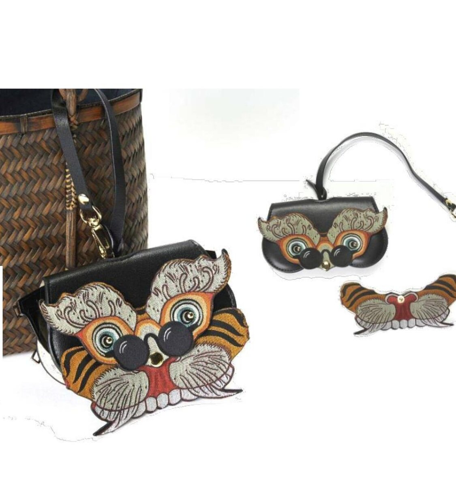
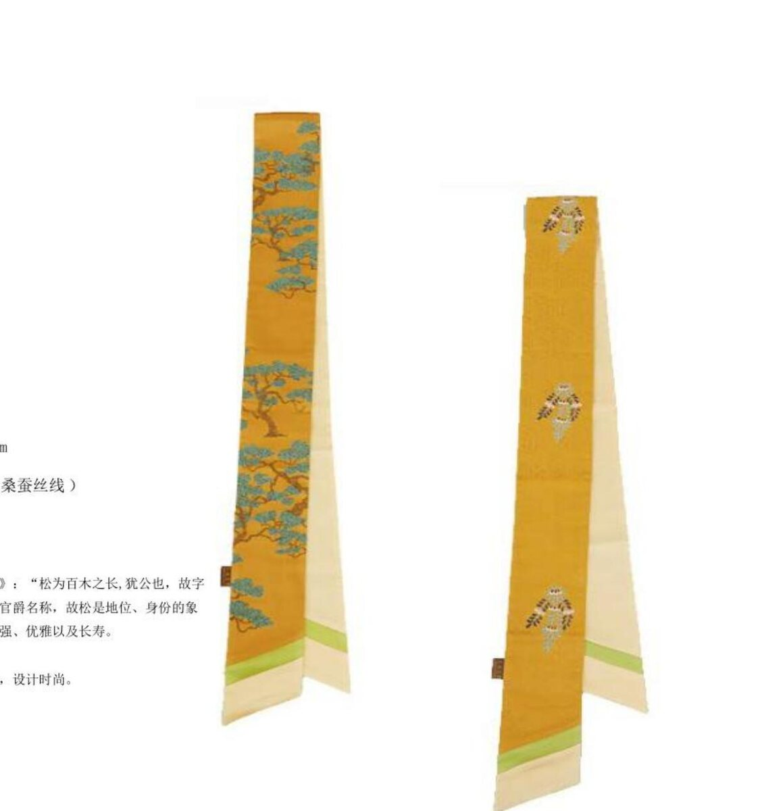
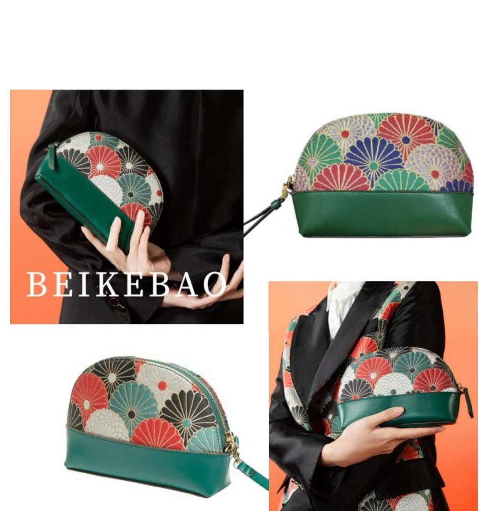
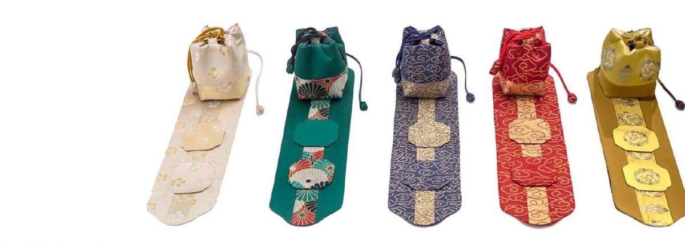

For three centuries, the Habsburg court collected Chinese silks, lacquers, and porcelains. Yet the most prized brocade in China — reserved by imperial decree for the throne alone — never travelled. Yúnjǐn was not for export. SEIDENHERKUNFT exists to bring it to European institutions and patrons, on commission, today.

Court fan in marbled hemp paper. Commissioned editions for institutional gifting.
SEIDENHERKUNFT operates as a bespoke house. We do not stock; we produce for a particular institution, a particular occasion, a particular patron. Each commission begins with a conversation.
Exhibition gifts, museum-shop editions, weaver residencies, scholarly catalogues. Tied to existing collections in chinoiserie, East Asian decorative arts, or textile history.
Institutional partnership →Anniversary gifts, executive presents, board commissions, brand collaborations. Yúnjǐn objects woven to your house palette or marked with your insignia.
Corporate enquiries →Ceremonial pieces of acknowledged provenance. Yúnjǐn has been a Chinese state gift for centuries; we make that lineage available to European chanceries and protocol offices.
Protocol-level commissions →Singular objects — woven panels for framing, fans, hairpins, brooches, or fully bespoke commissions on a one-of-a-kind basis. By correspondence and appointment.
By appointment →
Maria Theresa's wallpapers showed Chinese hands weaving silk. They were made for export, in China, to her specification.
The looms that wove for her own emperor remained unseen.
Yúnjǐn is, before it is anything else, a language of Muster — figured patterns, each with a history and a meaning. We work from the historical pattern archive of the Research Institute; new commissions begin by selecting the brocade ground that will carry your object.

Iridescent cloud-pattern ground. The pattern that gave yúnjǐn its name; the most versatile of imperial grounds.

The dragon — emblem of the throne. Five-clawed for the emperor, four-clawed for princes; the most strictly regulated of all Qing motifs.

Pine in the wind — the scholar's motif. From Wang Anshi's Discourse on Words: "the pine is duke among trees." A pattern of longevity, dignity, and rank.

Cut-branch chrysanthemums, late Qing. Health and longevity. The pattern on our shell-form bag.

A complete set of five brocades, one for each of the classical elements — water, fire, earth, metal, wood. Available as a tea-service or a presentation suite.
The Research Institute holds more than 2,000 pattern-script drafts, including hànfǔ-gǎo drafts surviving from the imperial weaving bureau itself.
SEIDENHERKUNFT works in direct partnership with the Nanjing Yúnjǐn Museum & Research Institute — China's only specialised yúnjǐn institution, founded 1957, formal applicant for the UNESCO Intangible Cultural Heritage inscription of 2009, custodian of more than 2,000 historical pattern-script drafts. Every panel in every commission is woven on its premises, by its master weavers.
For museums, corporate gifting, diplomatic protocol, and private collection, this is the supply chain: singular, traceable, signed.
The Atelier & Its Masters"I came to yúnjǐn from the other direction — through the European reception of Chinese art. I was reading German philosophy in Bonn, and at the same time thinking about what the eighteenth century in Vienna had seen of China, and what it had not. SEIDENHERKUNFT — 'the provenance of silk' — is what came of that double attention."
— Roslie Wu, founder · doctoral candidate in philosophy, Bonn